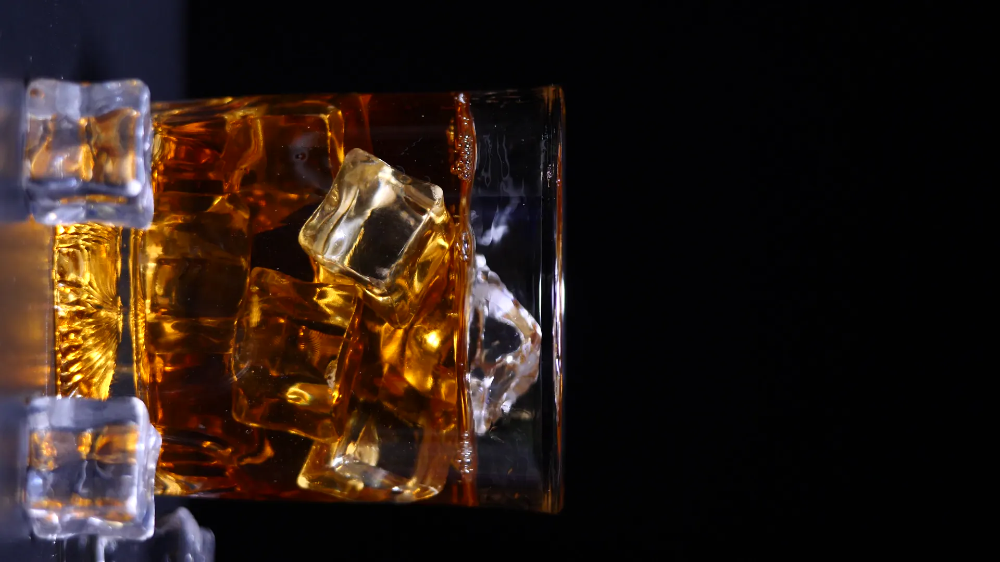
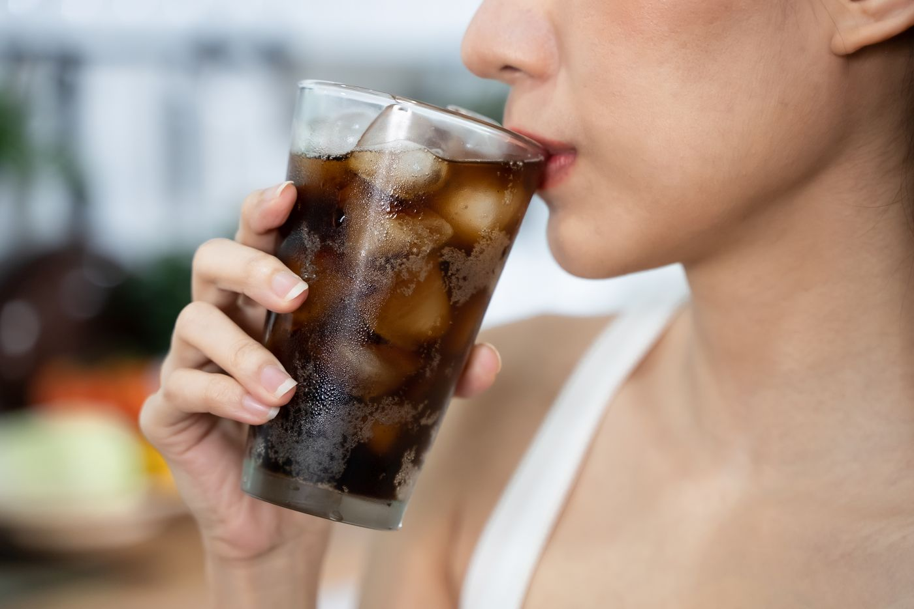
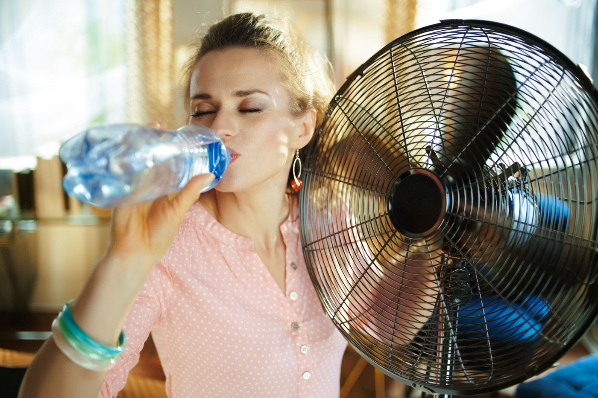
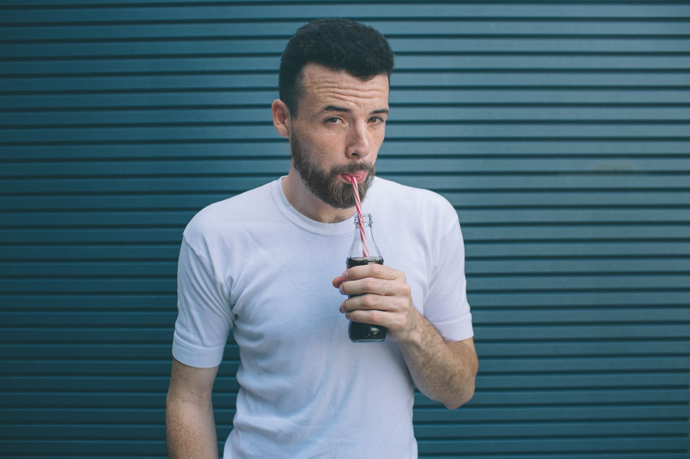
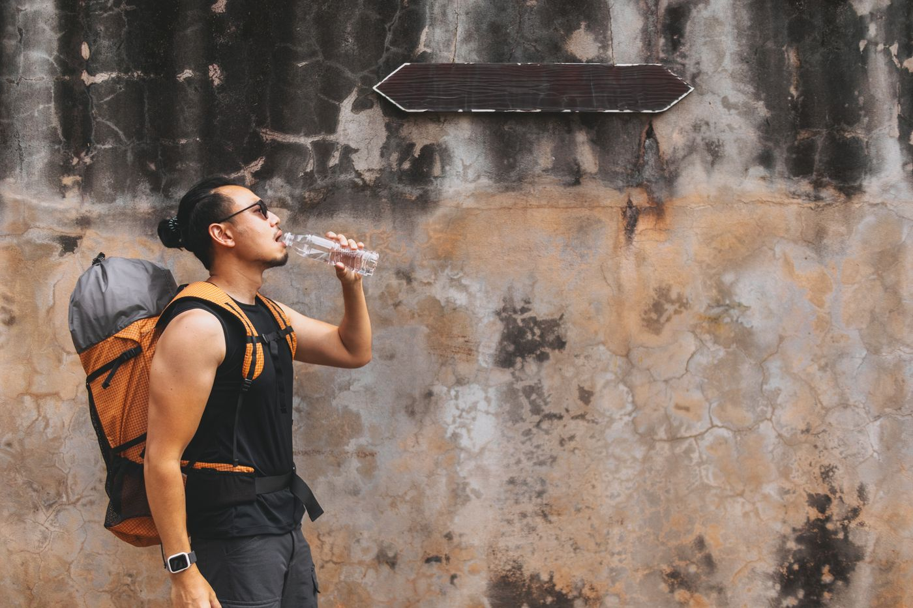

Small-batch ginger soda. Pressed root, charred skins, carbonated cold. Thirty-eight grams of ginger in every 250 ml bottle, and it tastes like it.
Slake
Scroll to cool it downThirty-eight grams of fresh ginger in a bottle you can hold in one hand.
Most ginger beer is sugar water with a ginger smell. Slake is pressed root: the fibrous, throat-catching kind, juiced the day it’s bottled. The skins go over an open flame until they blacken, then steep back in for the smoke.
It’s a burn you feel behind your ears. That’s not a flaw we’re working on.
In every 250 ml bottle
- Fresh ginger, pressed
- 38 g
- Charred ginger skins, steeped
- 6 g
- Cane sugar
- 14 g
- Lime, juiced
- ½
- Spring water, carbonated
- to 250 ml
Nothing else. No extract, no “natural flavours”, no preservatives. Keep it cold and drink it within the month.
-
0.0s
Ginger hits the tongue. Sharp, not sweet. You think you’ve got the measure of it.
-
1.5s
The heat blooms. Back of the throat first, then somewhere near your ears.
-
3.0s
You reach for the glass again. It’s the only way out, and you know it.
-
4.0s
Cold. The burn’s still there. It just has somewhere to go now.

It burns. Then it doesn’t.
Poured over ice at two degrees, the ginger has to push through the cold to reach you. It still does. It just finishes clean.
Serve at two degrees. Colder than feels reasonable.
Chill the bottle, not the glass. Pour over big ice, the kind that doesn’t rush. The condensation running down the bottle is the whole point: the colder it is, the further the ginger has to travel, and the cleaner it finishes.
Neat is the honest way. With mezcal is the popular way. We don’t argue with either.
- 250 ml
- Brown glass, crown cap. One serving, no second-guessing.
- 2 °C
- The serving temperature the recipe was built for. Warmer, and the sugar shows.
- Five things
- Ginger, charred skins, cane sugar, lime, spring water. The label is the recipe.
People, mid-sip. Nobody was ready.
Nobody told me. I took a normal-sized sip like it was a normal-sized drink.
Tomas, Rotterdam

Second bottle’s the one. The first bottle you’re just finding out.
Priya, Singapore

It was thirty-four degrees. I had a bottle in front of the fan and honestly it fixed both problems.
Léa, Marseille

Straw was a mistake. Straw puts it straight on the back of your throat.
Dan, Leeds

Walked forty minutes in Bangkok heat for the one shop that had it. Would do it again. Won’t tell you which shop.
Kenji, Osaka
Over ice with too much lime. My whole face went hot, and then it was the best thing I’d drunk all summer.
Ana, Lisbon
Fair warning: the burn turns up about a second after you think you’ve got away with it.
Marta, Warsaw
Drank one on the beach at sunset and then stopped talking for a bit.
Nia, Cape Town
A case is twelve. That’s about a week.
S$48 a case, delivered. Twelve 250 ml bottles, packed cold, sent the day they’re bottled.
Bars and shops: order the same way and say so in the email. We’ll come back with the trade sheet.